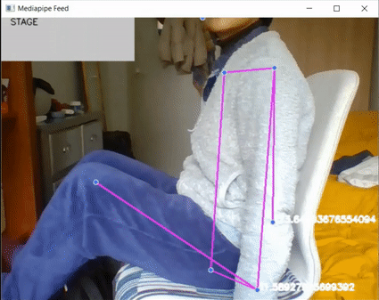

SafeDrive
Data, Math & Computing
Technology & Realization
Creativity & Aesthetics
Course: Embodying intelligent behavior in social context
Coach: Emilia Barakova & Jun Hu
Group: Elisa van der Maas, Armin Habibija, Syben van der Meer & Guangyu Chen
Most fatal traffic accidents are due to risky driving behavior such as drowsy driving, phone usage, eating & drinking, and other distractions. To address this problem this paper proposes a Explainable Artificial Intelligent (XAI) system that recognizes risky driving behavior and alerts consequently the driver through a conversational agent with a recognizable character. The system will choose the best fitting character to positively change the users’ driving behavior. Machine Learning is used in this model, where the design relies on computer vision to get data about the behavior of the user and the conversational AI for the interaction with the user.
